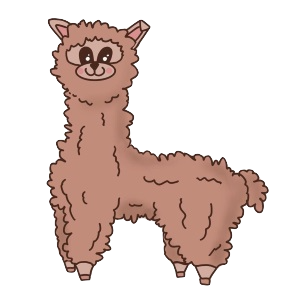

I'm Lillian.
Student at The University of Michigan.
About Me
Hello! My name is Lillian. I am a Freshman at The University of Michigan currently pursuing a Computer Science major through the College of Literature, Science, and the Arts. I am very passionate about contributing back to my community and helping teach others about computer science. In addition to computer science I have a large interest in education and art. My hobbies include cooking, long trots in the Arb, and the occassional yoga class. On campus you can often find me heading to class, hanging out with the squirrels in the Diag or exploring around North Campus!
This year I have just completed an introductory computer science course offered at UofM. Within this course I was able to not only learn how to build several projects including a simulated elevator game, I was also given strong foundational skills on how to approach programming problems. The course was taught in C++ and I was able to work with a variety of group members throughout the semester. From this class and my others I have gained the ability to collaborate effectively despite the difficult virtual setting of the class.
Education
University of Michigan Ann Arbor
College of Literature, Science and the ArtsClass of 2021
- Focusing in Computer Science in the College of Literature, Science and the Arts
- Courses Taken: Elementary Programming Concepts, Introduction to Psychology,
- Organizations: GEECS, Michigan Squirrel Club
Farmville High School
Class of 2017- Involved with a number of student organizations such as Key Club and Best Buddies
- Member of the Varsity Water Polo team for all four years
- Completed three Advanced Placement classes in US History, Computer Science, and English Literature
Experience
Freelance Tutoring
May 2015 - 2017
- Offered one on one assistance to students in biology and chemistry
- Structured learning plans for each student to ensure understanding of material
- Became well respected amongst peers for dedictation to helping others learn
Best Buddies Executive Board
August 2016 - May 2017
- Voted to executive board of club by my peers due to high level of involvement
- During tenure helped to increase number of activities indiviudals could participate in
- Strengthened bond with many vendors and third-party supporters of Best Buddies
Contact Me
I am always open to chat about new opportunities and my passions.
Feel free to reach out to me at any of these links
Ann Arbor, MI
Phone: +1 (234)-567-8900
Email: lillian@umich.edu